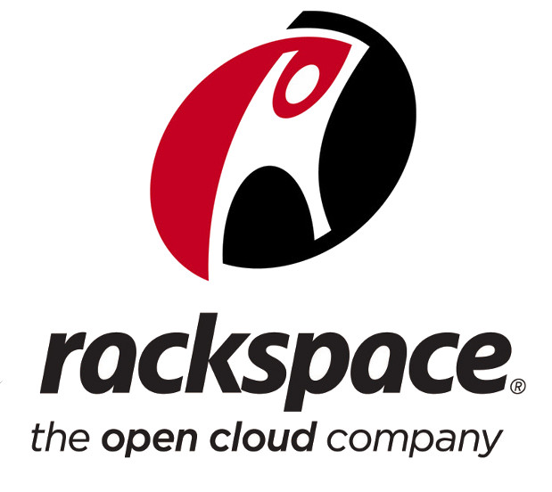
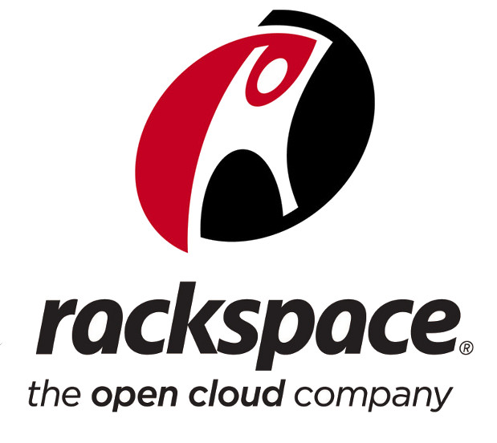
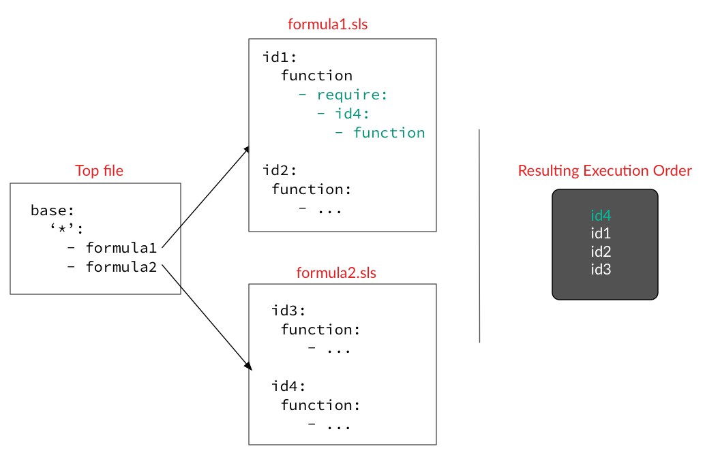

SaltStack
Introduction and First Steps
Infrastructure Automation
Lean .*
Minimize total time through the loop
Continuous Delivery

DevOps


 

Pets vs Cattle

Goals
Deployments should be boring with no surprises
Deployments should be fast with minimal (or no) downtime
Deployments should be idempotently repeatable
Infrastructure as code: One source of truth


Salt
Key Features
Remote Execution
Configuration Management
Parallel, Lightweight
Flexible
Technologies
Python
YAML + Jinja
ZeroMQ + MsgPack
Master / Masterless
Linux, xBSD, Solaris, Windows
Components and Terminology
Master & Minions
Grains

Modules & Functions
States / Formulas
Pillar

Returners & Salt Mine
Reactor
Salt Cloud
Basic Usage
Bootstrapping
> wget -O install_salt.sh https://bootstrap.saltstack.com
> sudo sh install_salt.sh <args>
Install Master/Minion, preseed keys, set minion id + master dns, (not) start daemons
By hand or automated via Vagrant plugin, Terraform, AWS bootstrap shell script, ...
Configuration Master
gitfs_provider: gitpython
gitfs_remotes:
- https://github.com/saltstack-formulas/postgres-formula.git
fileserver_backend:
- roots
- git
file_roots:
base:
- /srv/salt/states
- /srv/salt/formulas/sun-java-formula
pillar_roots:
base:
- /srv/salt/pillars
ext_pillar:
- git: master http://stash/project/conf.git root=subdirectory
log_level: debug
Configuration Minion
master: salt-master.etecture.com
log_level: debug
mine_interval: 1
grains:
roles:
- webserver
somekey:
- somevalue
id: some-node-name
Commands & Targeting
> salt '*' cmd.run 'uname -a'
> salt 'minion*' disk.usage
> salt -G 'roles:webserver' pkg.install vim
> salt -C 'G@os:Ubuntu and G@roles:webserver' network.interfaces
States: Formulas ("State Files")
include:
- some-other-state
app-running:
service.running:
- name: apache
- enable: True
- require:
- file: apache-config
States: Ordering, Requisites
Requistes match both state ID and name property
Pillar
apache:
user: www-data
group: www-data
modules:
enabled:
- rewrite
disabled:
- php5
sites:
test:
enabled: true
ServerName: test.com
File Templates
/etc/apache2/sites.available/somevhost.conf:
file.managed:
source: salt://vhost.tmpl
context: ...
Jinja2 Syntax
Conditional, Loops, Variables, Imports, ...
Template model is defined with context property in state
Top File
Pillar data is only synched to matching minions, state files to all machines.
Formulas
Ready to use "formulas" or blueprints, for managing e.g. services, system configuration or more complex scenarios like autoscaling or docker orchestration
Demo
Demo

Conclusion
Salt
is very flexible and performant
can be combined very well with other tools
supports a good number of OSs and cloud providers
can be daunting at first, lots (and lots) of documentation
reasonably sized community, growing steadily